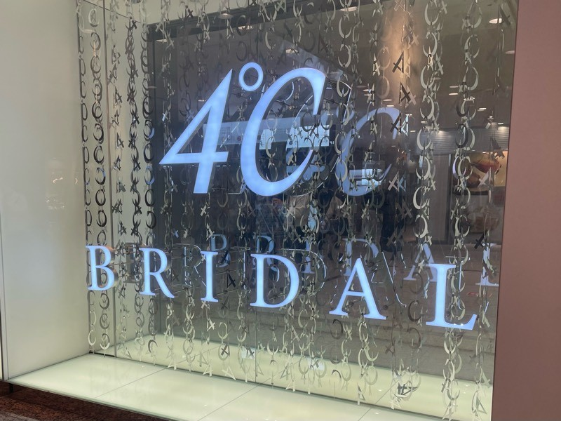
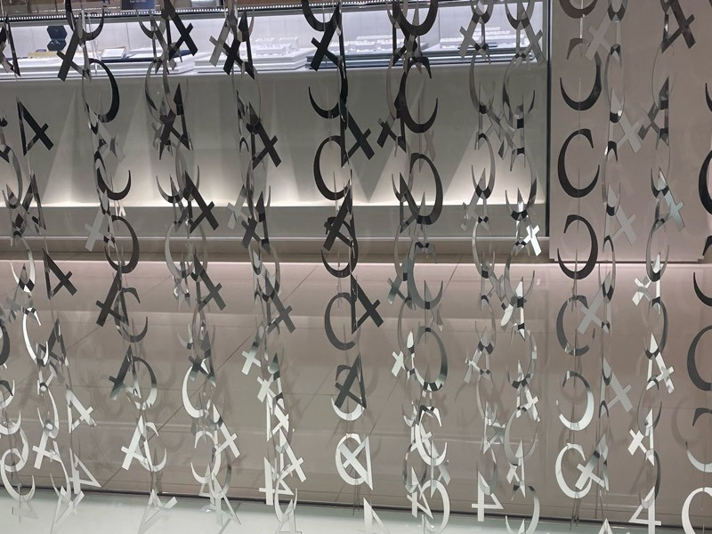
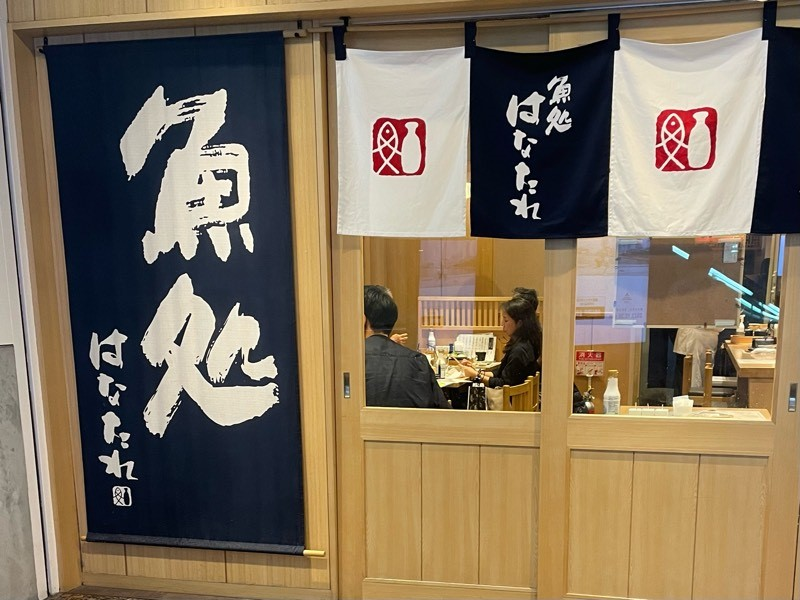
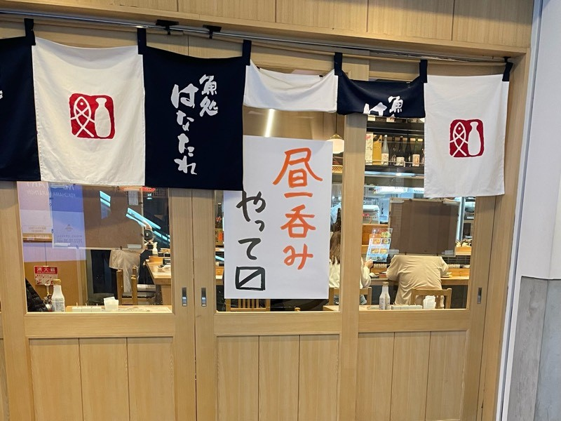
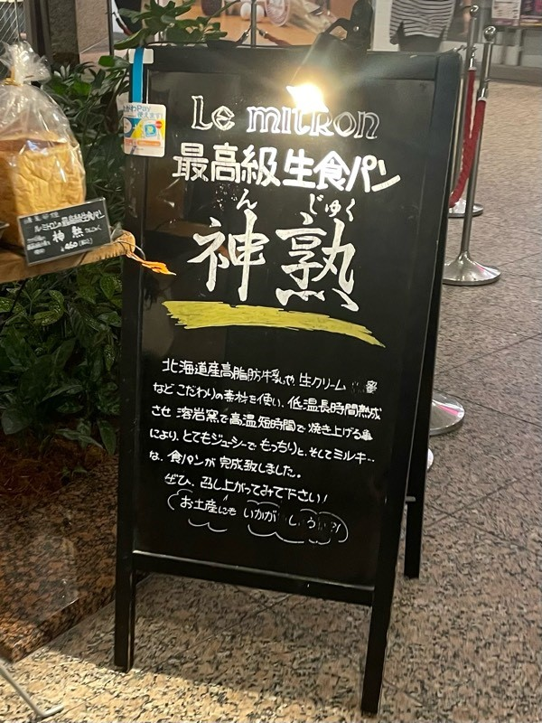

ランドマークプラザ内にて目に付いた・気になった看板や、POPなどを撮影した。
-
1階4°C-BRIDALにて

看板×カーテン×おしゃれ？
パッと見た時にキラキラしているためとても目に付く。しかし、よく見ると"4"と"C"が連なっており、かなり印象に残る。
看板的な意味を持ちつつ、店内の目隠しにも使われているようで、上手く看板とカーテンの要素を取り入れている。

-
1階魚処はなたれにて

昼呑みやって ・・・る？ない？ どっち？
「昼呑み」が赤字のため、昼吞みだとわかるが、最後の枡記号〼で知らない人はどっちなんだ？と思うだろう。
そもそもなぜ枡記号を使っているのかを考えると、ちょっとした古めかしさと魚を扱う店らしさを洒落っ気多めに表したかったのではないかと思った。

-
1階Le mitronにて
スポットライトのおかげで“神”感
“最高級”とか“生食”とか“北海道産”とか気になる点は多いが、なによりも“神熟”が強調されているからか、歩いていたら目に入ってきた。
でも結構明るい館内でもこのスポットライトのおかげで遠くからでも目についた。そして、このスポットライトと神の字のおかげで凄そうな食パンだと思わせる効果がありそうだと思った。

ランドマークプラザ内を20分適当に歩き、目についた看板・POP他を撮影するという方法で観察を行った。
いずれも2022/10/10撮影
撮影者：入野